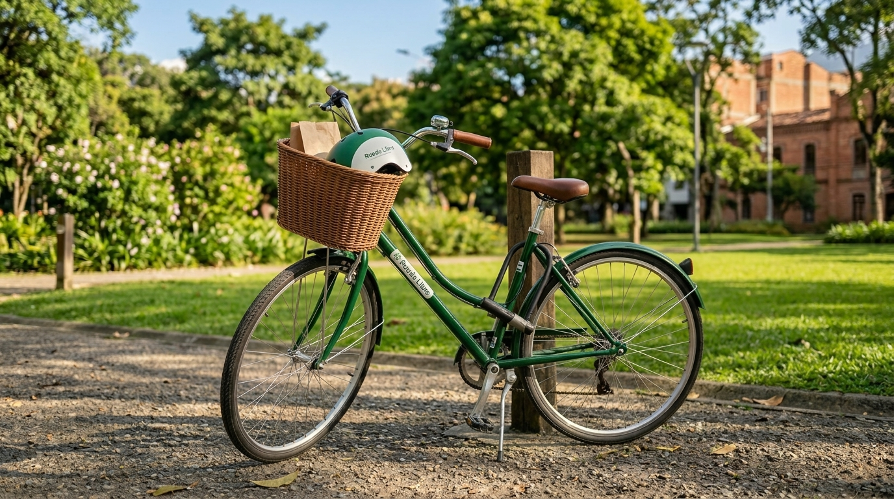
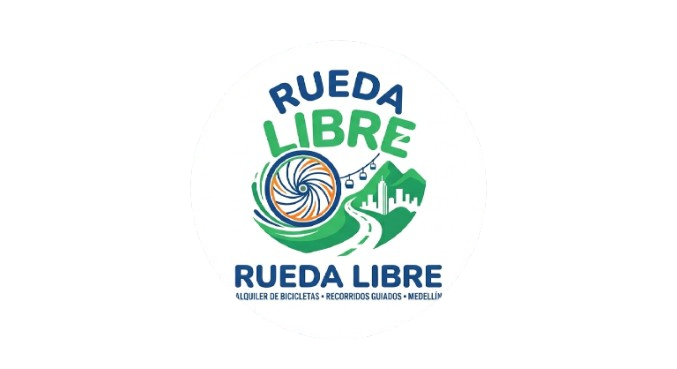
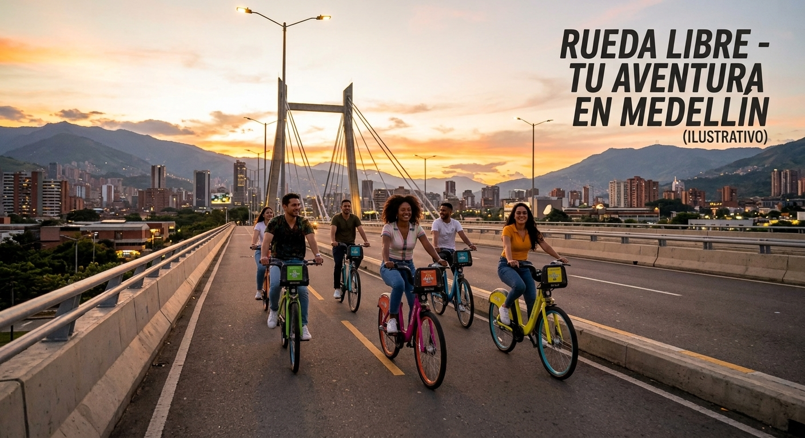
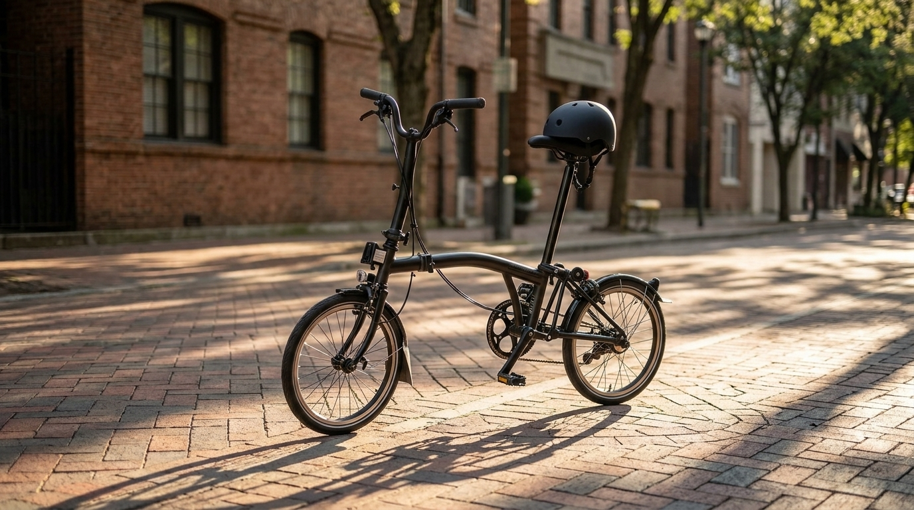
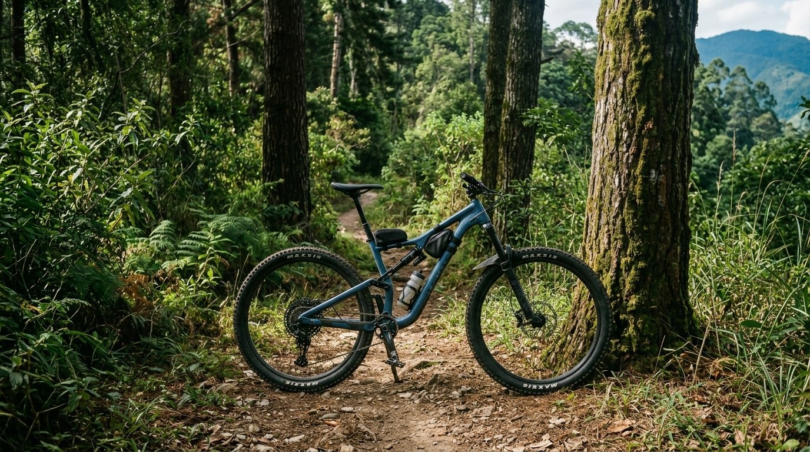
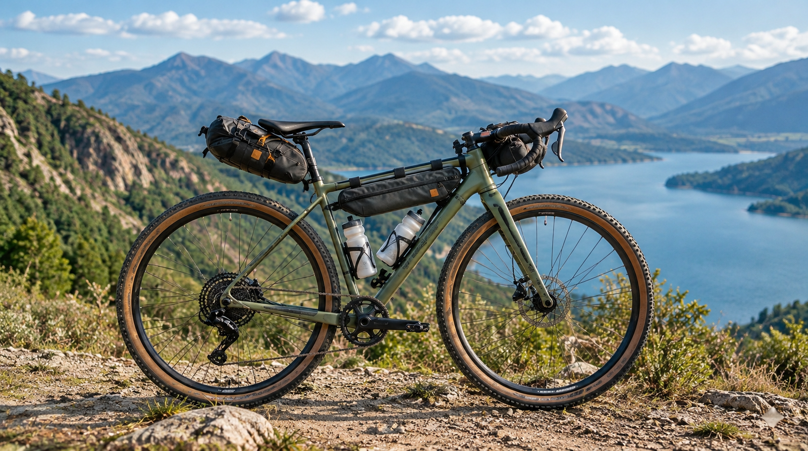
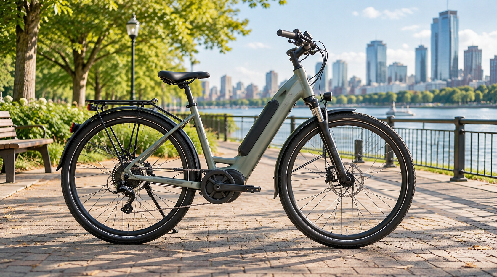
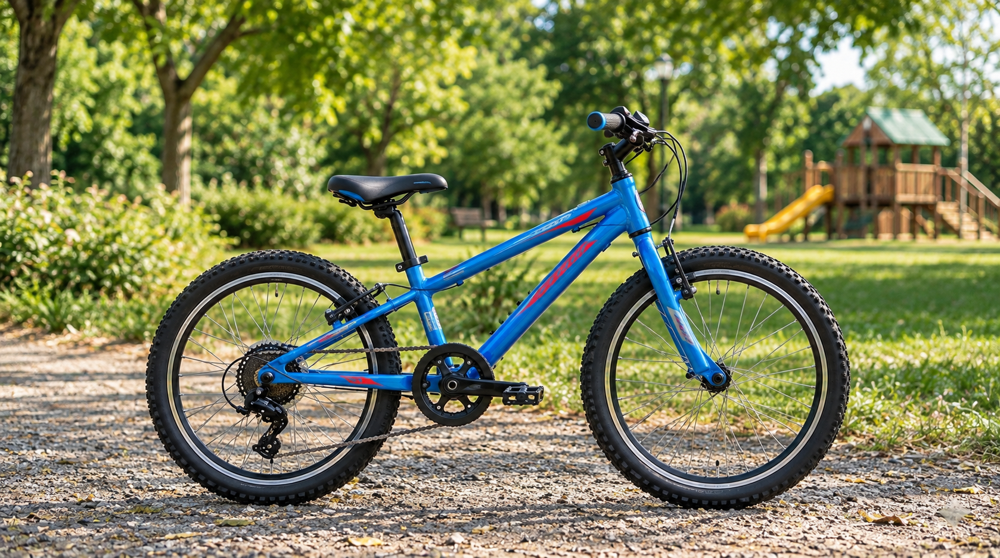
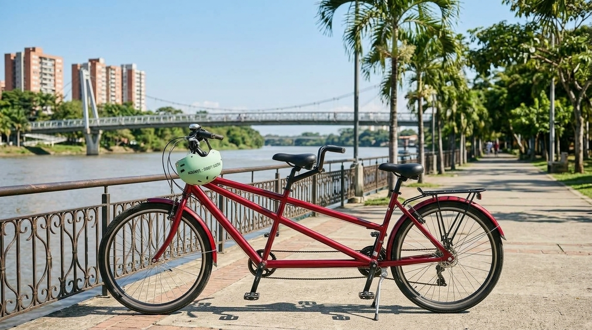

Urbana Clásica
Cómoda y liviana para las ciclorrutas.
$10.000 x hora

Reservar
Bienvenido a Rueda Libre, este es un emprendimiento nacido en Medellín cuyo propósito es alquilar bicicletas en la ciudad y organizar recorridos guiados en la misma.

Somos un emprendimiento apasionado por la movilidad sostenible en Medellín. Queremos que locales y visitantes descubran la magia de nuestra ciudad pedaleando, ofreciendo una alternativa de transporte ecológica, saludable y divertida.
Conoce las opciones que tenemos disponibles para que ruedes cómodamente por Medellín:
Cómoda y liviana para las ciclorrutas.
$10.000 x hora

ReservarSe dobla en segundos; ideal para combinar con el metro.
$12.000 x hora

ReservarSuspensión delantera y 21 cambios para las subidas.
$15.000 x hora

ReservarPara rutas mixtas de asfalto y destapado.
$18.000 x hora

ReservarAsistencia eléctrica con 45 km de autonomía.
$18.000 x hora

ReservarPara niños de 6 a 10 años.
$8.000 x hora

ReservarPara dos personas; perfecta para pasear en pareja
$20.000 x hora

ReservarRecorre Medellín con total libertad. Ofrecemos bicicletas por horas, medio día o días completos. Todo alquiler incluye casco y candado de alta seguridad. Siente la brisa y disfruta del clima de la eterna primavera en cada trayecto.
Únete a nuestras rutas temáticas por el centro histórico, parques principales y zonas de arte urbano. Cada recorrido guiado incluye hidratación y un guía bilingüe. Es la oportunidad perfecta para conocer la verdadera esencia paisa.
Conoce los detalles de nuestros recorridos.
¿Tienes tu propia bicicleta pero necesita un ajuste? Nuestro equipo de mecánicos expertos ofrece servicio de mantenimiento preventivo, reparación de pinchazos, y ajuste de frenos y cambios para que sigas rodando seguro por la ciudad.
Estas son nuestras tarifas.

Estamos ubicados a pocos pasos de la estación Poblado del Metro, listos para entregarte tu bicicleta.
Nuestra ubicación
Contáctanos